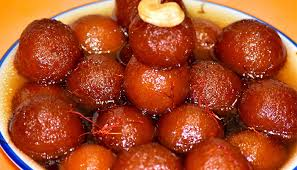
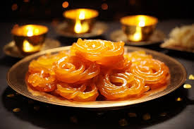

SWEET DISH RECIPE
GULABJAM RECIPE

Ingredients
This recipe uses milk powder for convenience.
For the Gulab Jamun:
1 cup dry whole milk powder
¼ cup all-purpose flour (maida)
1 large pinch of baking soda (about ⅛ tsp)
1 tbsp ghee (clarified butter), melted
2-4 tbsp warm milk (as needed to form a soft dough)
Ghee or neutral oil for deep frying
For the Sugar Syrup:
1.5 cups sugar
1.5 cups water
4 green cardamom pods, lightly crushed (or ¼ tsp powder)
1 tsp rose water (or a few drops of rose essence)
Optional: A few saffron strands
JALEBI RECIPE

Recipes for jalebi come in two main types:
Traditional Method: Involves fermenting a maida (all-purpose flour) and yogurt or besan (chickpea flour) batter overnight (10-24 hours) to develop a characteristic tangy flavor.
Instant Method: Uses leavening agents like baking powder and baking soda to make the jalebis immediately, saving time, though the flavor profile is slightly different without the natural fermentation tang.
Essential Ingredients
Component - Ingredients
For the Batter -- All-purpose flour (maida), chickpea flour (besan), yogurt (curd), water, baking soda/powder, and optional food coloring or turmeric for color.
For the Syrup -- Sugar, water, saffron strands, cardamom powder, and lemon juice (to prevent crystallization).
For Frying Ghee or neutral-flavored oil (e.g., sunflower or vegetable oil).
Step-by-Step Recipe (Traditional Method)
Prepare the Batter: In a bowl, mix all-purpose flour, besan, a pinch of baking soda, and turmeric or food color. Add yogurt and lukewarm water gradually to form a thick, flowing, and lump-free batter (similar to idli batter consistency).
Ferment: Cover the bowl and leave it in a warm place for 12-24 hours. The batter will show small bubbles and develop a slightly sour smell when ready.
Make the Sugar Syrup: In a separate pan, combine sugar and water. Boil over medium heat, stirring until the sugar dissolves. Simmer until it reaches a "one-string" consistency (a single thread forms between your thumb and index finger when tested). Turn off the heat and stir in saffron, cardamom powder, and lemon juice to prevent crystallization.
Fry the Jalebis: Heat oil or ghee in a wide, flat-bottomed pan over medium heat. The optimal temperature is around 350°F (175°C).
Shape and Cook: Fill a squeeze bottle (like an old ketchup bottle) or a piping bag with the batter. Carefully squeeze the batter into the hot oil in concentric circles, starting from the center and moving outward. Fry until crispy and light golden brown on both sides.
Soak and Serve: Immediately remove the hot jalebis from the oil, drain excess oil for a second, and immerse them in the warm sugar syrup for 2-3 minutes, flipping once to ensure even coating. Remove from the syrup and place on a plate or wire rack.
BARFI RECIPE
 Key Ingredients for Quick Milk Barfi
Key Ingredients for Quick Milk Barfi
This recipe takes about 15–25 minutes of cooking time.
Milk Powder: 2 to 2.5 cups (full-fat recommended)
Sugar: 1/2 to 3/4 cup powdered or granulated sugar (adjust to taste)
Milk: 3/4 to 1 cup full-fat milk
Ghee: 1/4 cup clarified butter, plus extra for greasing
Flavoring: 1/4 tsp cardamom powder or vanilla extract
Garnish: Chopped almonds and/or pistachios, edible silver leaf (vark) (optional)
Step-by-Step Instructions
Prepare the Pan: Grease a square or rectangular pan/tray with ghee or line it with parchment paper for easy removal.
Combine Ingredients: In a heavy-bottomed, non-stick pan or kadai on low heat, add the milk and ghee. Stir until the butter/ghee melts completely.
Add Milk Powder & Sugar: Gradually add the milk powder and sugar, whisking constantly to avoid lumps. The mixture will form a paste-like consistency.
Cook the Mixture: Continue to cook on a very low flame, stirring continuously. The mixture will start to thicken and form a soft dough that leaves the sides of the pan (around 8–10 minutes).
Test the Consistency: To check if it's done, take a small portion and let it cool for a minute. You should be able to roll it into a non-sticky ball. If it's sticky, cook for another few minutes; if it's too dry/hard, you may have overcooked it.
Add Flavoring & Set:v Turn off the heat and mix in the cardamom powder. Immediately transfer the mixture to the prepared pan, spread evenly, and press chopped nuts on top.
Cool and Cut: Allow the barfi to cool completely and set (about 1-2 hours at room temperature, or faster in the fridge). Once set, use a sharp knife to cut it into squares or diamond shapes.